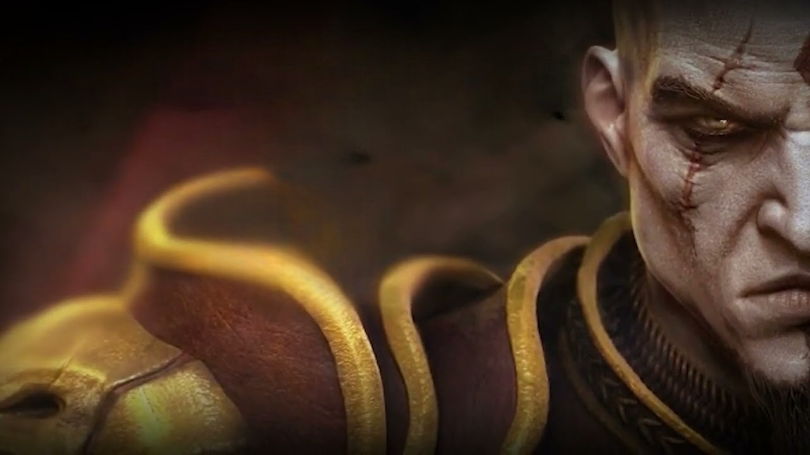

/gow.png)
Em God of War (2018), qual é o nome do anão que criou o Machado Leviatã junto com Brok e Sindri, mas que já faleceu antes dos eventos do jogo?
(A) Andvari
(B) Motsognir
(C) Nenhum, foram apenas Brok e Sindri.
(D) Ivaldi

(A) Andvari
(B) Motsognir
(C) Nenhum, foram apenas Brok e Sindri.
(D) Ivaldi